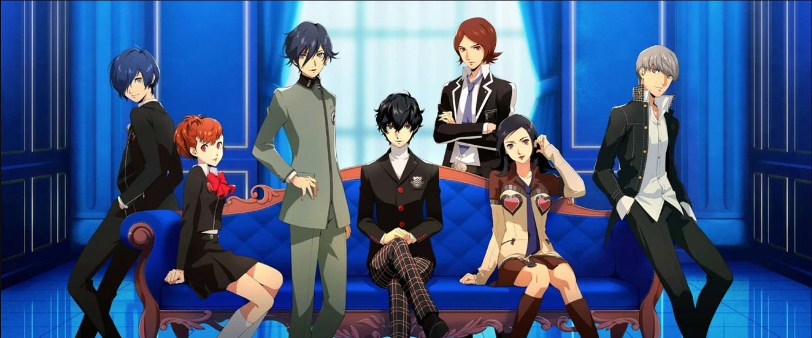
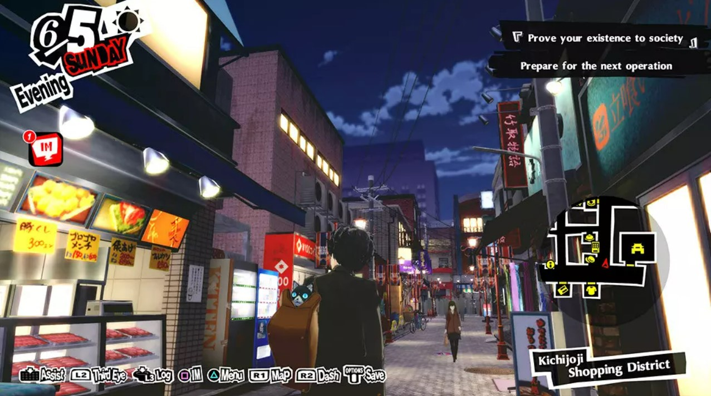
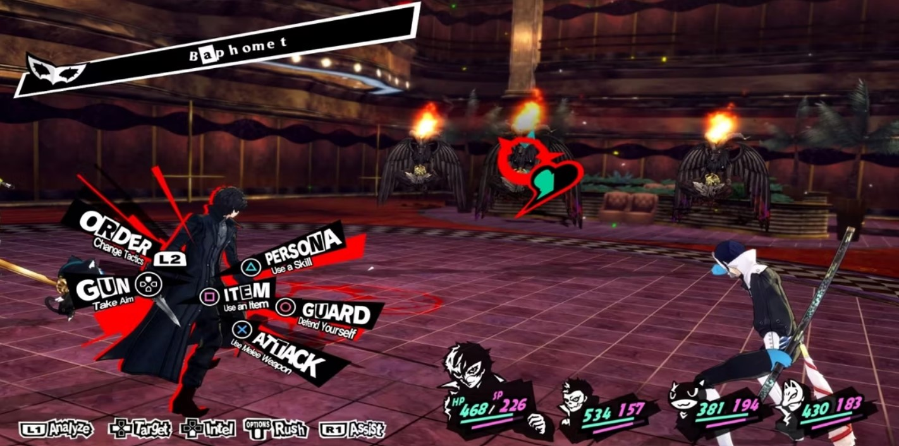
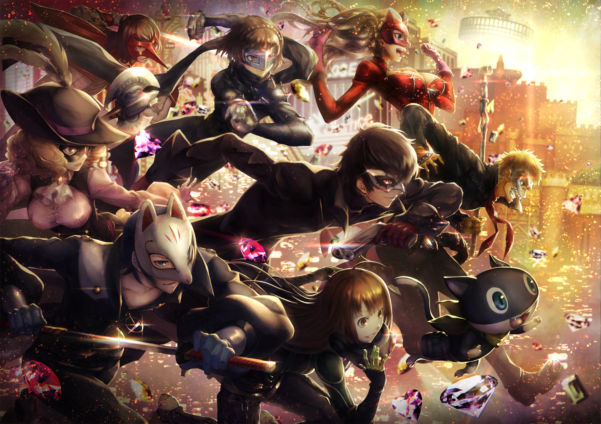

Persona 5 Royal
Persona 5 Royal cover art and the song "Life Will Change" from the official soundtrack.
Persona 5, released in September 2016 in Japan and April 2017 worldwide, is the most famous Megami Tensei game of the franchise, despite being a part of the spinoff series "Persona". Many people may recognize the main character "Joker" from Super Smash Bros. Ultimate. Obviously this is not the Joker from Batman. "Joker" is the codename given to the main character (who you can name anything you want, which is commonplace in Megaten games), referring to a wild card of a standard 52-card deck. This page is dedicated to the expanded version, called Persona 5 Royal, released on the PlayStation 4 in early 2020 and has recently been released on Steam, Switch, and Xbox Game Pass in late 2022. I will explain how Persona is unique as a spinoff series, and I will review Persona 5 Royal as unbiased as possible. Other reviewers may overly glorify this game without listening to a single bit of criticism, or they may hate on the game simply because it is the most popular Megaten game.
Artwork of all of the playable main characters from the Persona series.
Now, the following brief explanation of the Persona series mainly applies to Personas 3, 4, and 5. While some of these features apply to the old Persona games, Persona 3 was the first game to apply some of the features Persona is known for. Personas are, as simply as I can put it, spirits that fight alongside a person. They represent a manifestation of a person's "true self", or the side of someone that they try to hide from society but eventually accept as a part of them. People usually have unique Personas, but main characters (the one you are controlling) are capable of carrying not just their own unique Persona, but also a bunch of other Personas that they can equip... and those Personas take form of the demons from the main series. In Persona, you fight alongside your schoolmates, and your friends are capable of using weapons as well as the attacks and magic of their Personas.
Example image of daily life in the overworld of Persona 5 Royal.
Something unique about Persona is that during the game, you go through a year of high school in Japan. It takes place in modern-day Japan, not post-apocalyptic Japan. You have a calendar, and the story progresses as you go through the weeks and months. You usually have 2 time slots in which you can do something: afternoon and evening. You can use this time to hang out with friends, either fellow teammates or just normal people you've met, or you can improve your character's "social stats", which include capabilities such as how smart you are or how courageous or charming you are. Hanging out with people and improving your relationships not only show character development, but also can give you new abilities in combat and help you with Persona fusions (which work the same as Demon fusions). You don't have all the time you like though- you usually have deadlines to meet, like exams or story-based deadlines. For example, in Persona 3 you had a boss fight every full moon. You can get money from defeating enemies or choosing to work at a part-time job and buy useful things from shops during daily life. (It should be noted that you can go work at your job any time you like. You just show up. No required shifts. Wouldn't that be nice.) At the end of the game's story, you can choose to restart the game, but many things carry over in what is known as New Game+ such as money, equipment, registered obtained Personas, social stats, and in-game achievements.
Example image of combat with the song "Take Over", one of the combat themes added to Royal.
Now for combat. In Persona, you can opt to enter a dungeon during a time slot (in Persona 5, it is during the afternoon). Why you have to enter dungeons depends on the specific game, but in Persona 5, you and your friends are capable of entering somewhere called the Metaverse (no, not the Facebook one) where you are able to explore the subconsious minds of people. People may have warped or corrupted mindsets, so you and your friends set off to change the hearts of these kinds of people. For example, the very first dungeon is the mind of a corrupt gym teacher that believes himself to be the untouchable king of the school, and his mind dungeon (called a Palace), is the school converted into a castle. This castle has knights and guards, but once interacted with they turn into "Shadows", which take the form of demons from the main series. You can take a day to enter these Palaces and leave whenever you believe your team is too tired to continue or you run out of healing items or something, but you don't have all the time you like- there's always a deadline for some reason. In this example, the gym teacher will expel you in 3 weeks if you don't conquer his castle first, which will result in him confessing his crimes in real life.
Combat works similarly to in the main series, but instead of the "Press Turn" system, you have the "Once More" system (unoffical name). It's not one side takes its turns, it's each character in battle attacks in order of speed stats, like in Pokémon. A character gets one extra action if they knock an enemy down, which is done by striking them with an element they are weak to or by landing a critical hit- like in Pokémon. If all enemies go down, you can use an All-Out Attack, which is a special action where all current party members jump in and attack all of the enemies at once. (Joker's Final Smash in Super Smash Bros. Ultimate is an All-Out Attack.) As you play through the story of Persona, you will meet people that join your team, but the game doesn't permit you to have more than 4 people in combat at the same time. You can usually swap out party members at any time.
The Review
Now, I said I would review this game as fairly as possible. It is my favorite Megami Tensei game. Persona 5 has an amazing story, graphics, upbeat and awesome soundtrack (available on Spotify), and almost all of the characters are well-written and loveable with a significant amount of development. The controls are fluid and the dungeons are super fun to explore and fight in. I didn't go too into depth on how dungeon exploration works on this page, but it's something that is easy to learn in-game. The art style is very beautiful and fairly unique, and the visual effects during combat are very appealing and the party members dynamically talk and communicate while exploring and fighting. Persona 5 Royal adds an additional part of Tokyo to explore, an additional party member, an additional character to hang out with, additions to a certain character's story and development that I believe was necessary, and one more dungeon before the game ends. There are more special hangout events and ways to build your relationships. Now, it may sound strange to most people that a game that has a high school life simulator built into it fun, but I, along with many others, love this game. This game is also admittedly easy compared to the other Megaten games, in which some people complain about, but hey, just play on the hardest difficulty on your first playthrough then.
I do have a few issues with the game because no game is perfect. One thing is a few party members join your team late in the game, meaning they get relatively little playtime. And if you replay the game, they still receive that relatively little screentime. During your New Game+ playthroughs you should be permitted access to all of the game's party members, even though they wouldn't take part in story events. They can only be used in dungeon exploration and battle until officially unlocked. But the biggest thing I believe should have been done to improve the game is how time consumption works. As it stands, you have 2 actions every day under normal circumstances- one during the afternoon and one during the evening. The issue is it doesn't matter how large the action is. If the game declares you will pass time, you will pass time. If you want to brew a cup of coffee to impress your uncle or would rather go work at your part time job, the same amount of time will pass. This is very frustrating sometimes, especially given that you do not have all the time you like. My solution (not that it matters much) would be to make it so you have "action points", like 4 per time slot. You can take 2 actions to hang out with a friend, 1 action to study, and your last action to brew coffee. Or use all 4 to work at your job. The game would need to increase how hard it is to increase your social stats in order to balance this, but I feel that it would be worth it to make spending time make more sense.
Overall, I highly recommend this game. It is super fun, very easy to get immersed in, and it honestly teaches a lot of good life lessons. You may be someone who wants to avoid mainstream games or movies or whatever, but there's a reason why this is the most famous game in the franchise.
